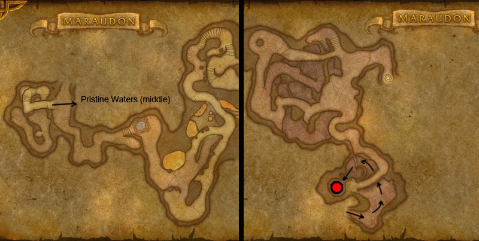

You can find the Maraudon Earth Song Falls dungeon within Desolace, Kalimdor.
The coordinates are (29.9,63.0)
Click for Dungeon Entrance:


Go inside and follow the pathway round, go down some stairs.

For this dungeon entrance take the middle (Pristine Waters) path. Run round & go left. Head down steps & enter the room with the small Portal to Inner Maraudon.
Route:
Map 1
Killing Princess Theradras (boss 2) completes the LFD dungeon but the group should stay & jump down into the water to kill Rotgrip (boss 3).

Bosses:
1. Landslide2. Princess Theradras3. Rotgrip
Quick Boss Tactics:
/i Inflicts physical damage to current target, knocks them back. Trample inflicts physical damage to nearby players. When the boss stuns all players he will summon shardlings to deal damage.
/i Inflicts physical damage to current target, knocks them back. Trample inflicts physical damage to nearby players. When the boss stuns all players he will summon shardlings to deal damage.
Quick Boss Tactics:
/i Will gaze at current target & fear all nearby. A player will be hit with Boulder, damages & stuns. Careful of Dust Field, try to run away or you will be hit & knocked back. Don’t stand near an edge that you could be knocked off.
/i Will gaze at current target & fear all nearby. A player will be hit with Boulder, damages & stuns. Careful of Dust Field, try to run away or you will be hit & knocked back. Don’t stand near an edge that you could be knocked off.
Quick Boss Tactics:
/i His only attacks cause damage to his current target. Fatal Bite inflicts damage but also heals the boss for twice the amount.
/i His only attacks cause damage to his current target. Fatal Bite inflicts damage but also heals the boss for twice the amount.